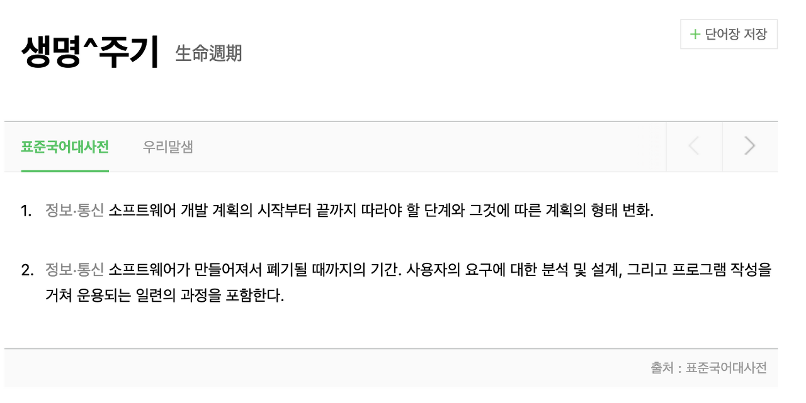
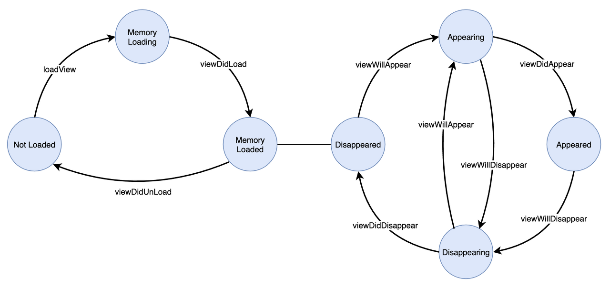
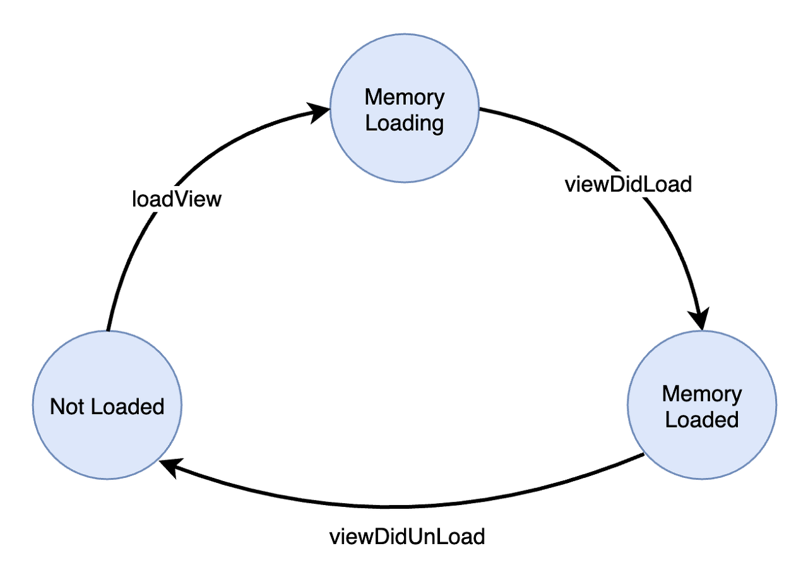
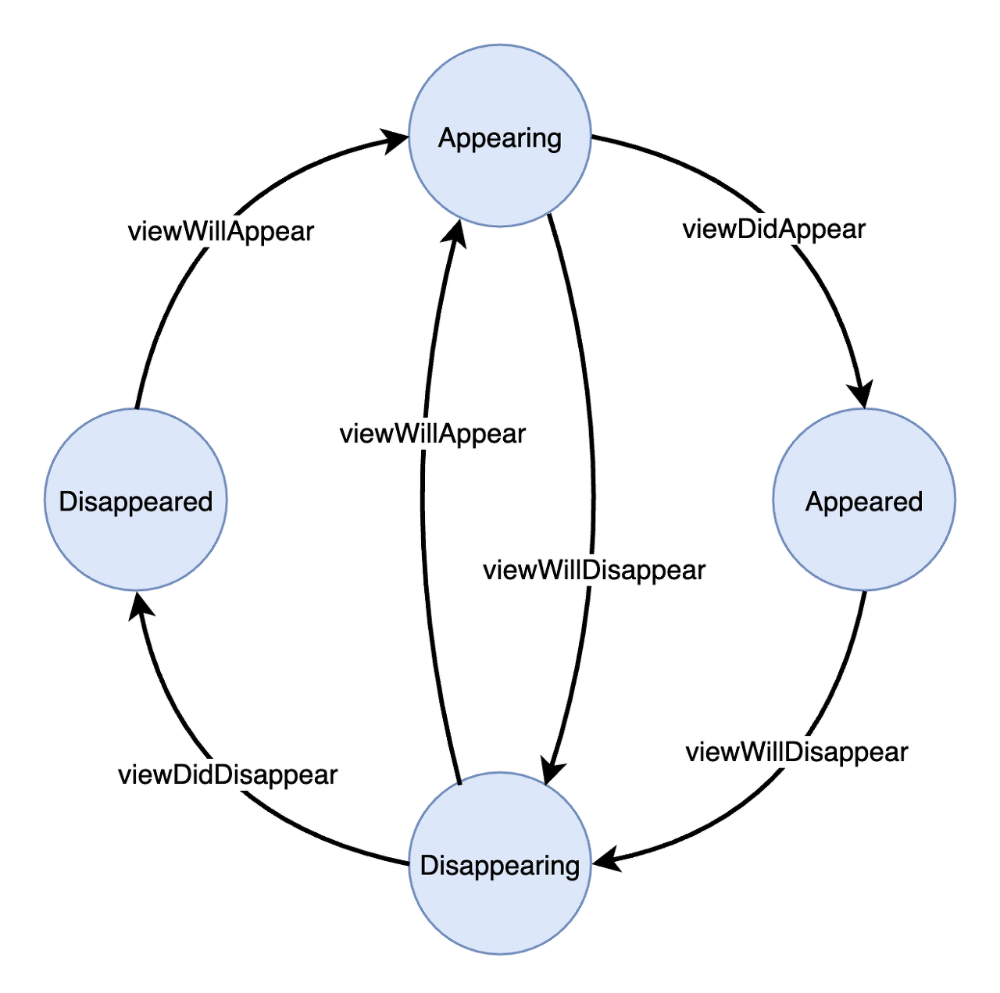
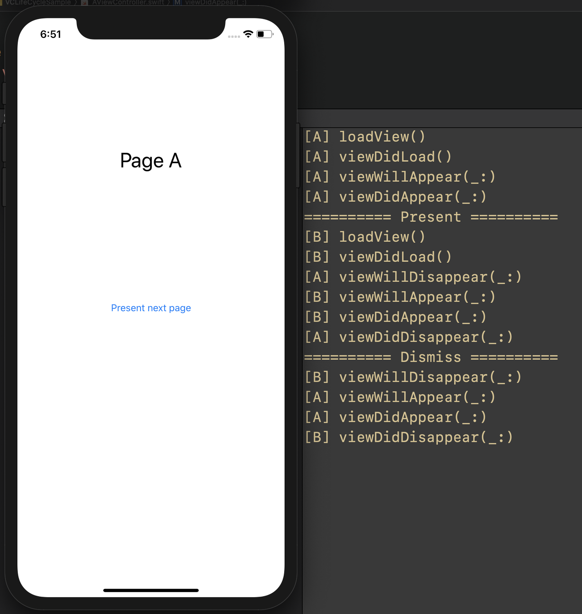
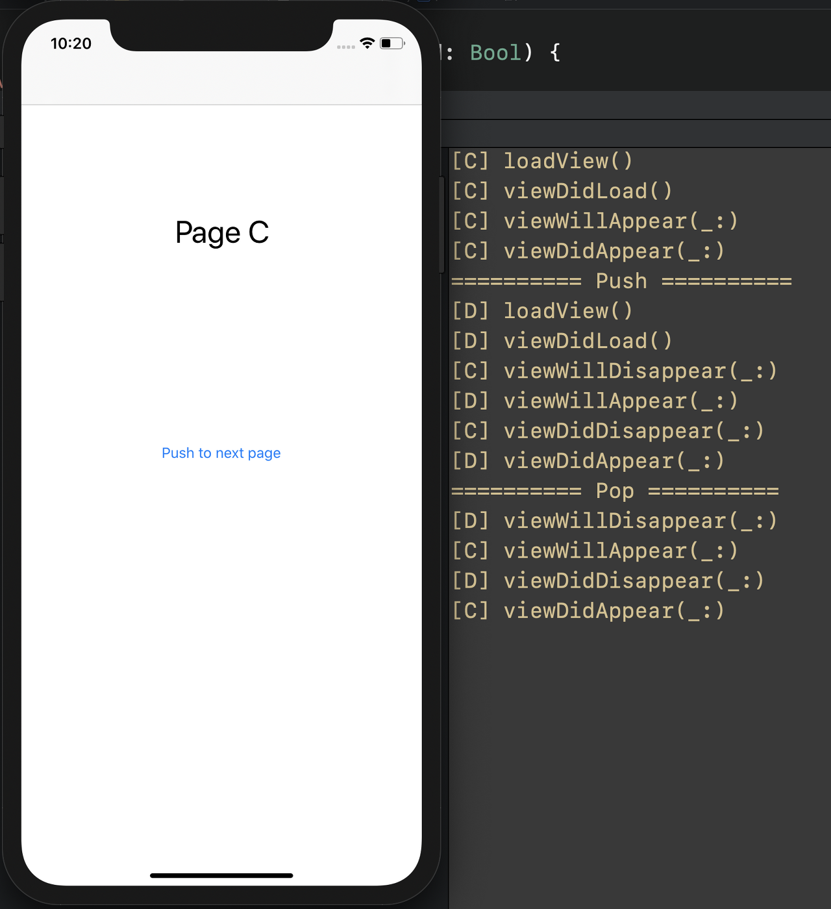
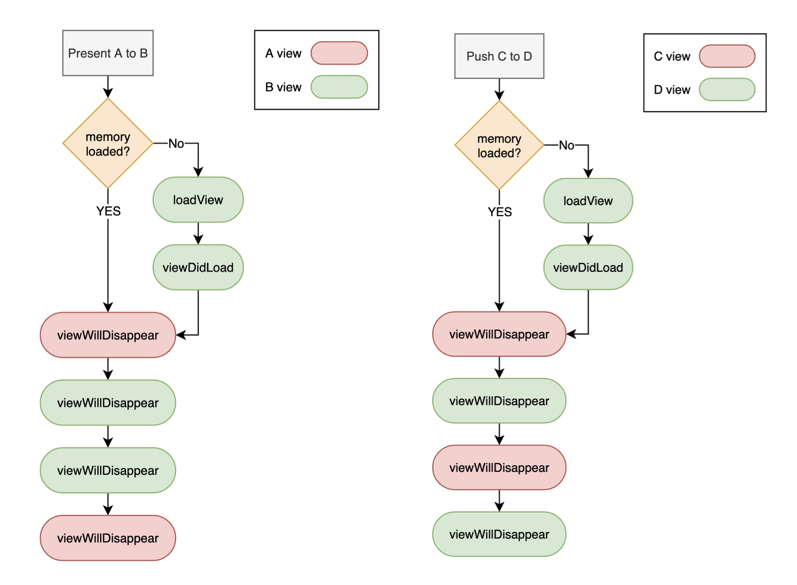

ViewController Lifecycle
ViewController의 생명 주기(lifecycle)와 화면 전환 방식에 따른 lifecycle 동작 방식
Table of Contents
Life cycle

생명 주기(lifecycle)는 ‘어떤 것의 시작에서 끝까지의 과정에서 일어나는 상태나 단계의 변화‘로 정의할 수 있다. 즉, ViewController의 lifecycle이란 ViewController의 생성부터 소멸까지의 상태 변화를 말한다.
ViewController’s Lifecycle
App은 view가 화면에 나타나고 사라지는 특정 시점에 UIViewController에 특정 notification을 전달한다.

UIViewController는 특정 notification을 받을 때 관련 method를 호출한다. 개발자는 UIViewController를 상속받는 class에서 원하는 시점에 해당 method를 override하여 custom code를 실행시킬 수 있다.
View Management
View가 화면에 처음 나타날 때 및 view가 사라질 때는 다음 생명 주기를 거친다.

loadView : 화면에 보여질 view를 메모리에 load하는 작업이 시작될 떄 전달한다. 시점에
UIViewController의loadView()가 호출되어 root view가 만들어진다.1
func loadView()
viewDidLoad : Root view가 메모리에 load된 후 전달한다.
UIViewController의viewDidLoad()가 호출되어 root view가 메모리에 할당된 후 필요한 작업을 수행한다. 이 noti는 view가 화면에 나타날 때 최초 1번만 전달된다.1
func viewDidLoad()
viewDidUnload : View가 메모리에서 해제된 후 전달된다.
Handling View-Related Notifications
메모리에 load된 view가 화면에 나타나고 사라질 때 다음 생명 주기를 거친다.

viewWillAppear : 메모리에 load된 view를 실제 화면에 렌더링하기 시작할 때 전달한다.
UIViewController의viewWillAppear(_:)가 호출되어 view가 화면에 보여질 때 마다 호출된다.1
func viewWillAppear(_ animated: Bool)
viewDidAppear : View가 렌더링이 끝나고 실제로 화면에 나타났을 때 전달한다.
UIViewController의viewDidAppear(_:)가 호출되어 view 렌더링이 끝날 때 마다 호출된다.1
func viewDidAppear(_ animated: Bool)
viewWillDisappear : View가 화면에서 사라질 때 전달한다.
UIViewController의viewWillDisappear(_:)가 호출되어 view가 화면에서 사라질 때 마다 호출된다.1
func viewWillDisappear(_ animated: Bool)
viewDidDisappear : View가 화면에서 완전히 사라졌을 때 전달한다.
UIViewController의viewDidDisappear(_:)가 호출되어 view가 화면에서 사라졌을 때 마다 호출된다.1
func viewDidDisappear(_ animated: Bool)
화면을 전환할 때 Lifecycle
iOS에서는 크게 두 가지 화면 전환 방식을 제공한다.
- Modal :
UIViewController에 의한present/dismiss화면 전환 - Naviagtion :
UINavigationController에 의한push/pop화면 전환
아래에서 말하는 ‘view’는 모두 UIViewController의 root view를 의미한다. Root view에 subview가 추가되는 것은 화면 전환이 아니다.
Present/Dismiss
Modal 방식은 현재 화면의 위에 다른 화면을 쌓아올리는 방식으로 화면을 전환한다. View A와 View B 사이에 present, dismiss 방식으로 화면이 전환될 때는 다음 순서로 lifecycle이 동작한다.

여기서 A -> B 전환 시점에서 각 view의 lifecycle 동작 순서에 주의한다. View A가 화면에서 완전히 사라지기 전에 View B의 렌더링이 끝난다.
- View A를 내릴 준비
- View B를 화면에 나타냄
- View A를 화면에서 내림
반대로, View B에서 View A로 dismiss하면 present와 반대 순서로 동작한다.
- View B를 내릴 준비
- View A를 화면에 나타냄
- View B를 화면에서 내림
Modal 방식은 전환하려는 view가 화면에 완전히 나타나기 전까지 이전 view가 화면에 남아있는 상태이기 때문에 이런 순서로 동작한다고 이해할 수 있다.
Push/Pop
UINavigationController는 rootViewController를 기준으로 다른 화면을 stack 구조로 쌓아 올린다. View A와 View B 사이에 push, pop 방식으로 화면이 전환될 때는 다음 순서로 lifecycle이 동작한다.

View A -> B의 전환 시점에서 lifecycle 동작 순서가 modal 방식과 차이가 있다. Modal 방식은 다음 view가 완전히 화면에 나타난 뒤에 이전 화면이 사라졌다면, navigation 방식은 이전 view가 화면에서 완전히 사라져야 다음 view의 렌더링이 끝난다.
- View A를 내릴 준비
- View B를 나타낼 준비
- View A가 화면에서 사라짐
- View B가 화면에 나타남
pop을 할 때는 이것과 반대로 동작한다.
- View B를 내릴 준비
- View A를 나타낼 준비
- View B가 화면에서 사라짐
- View A가 화면에 나타남
Navigation 방식은 modal 방식과 달리 swipe로 화면을 전환시킬 수 있는데, 이 때 swipe 정도에 따라 두 view가 모두 화면에 나타날 수 있다. 즉, 이전 view가 화면에서 완전히 사라진 다음에야 이동하려는 view의 렌더링이 끝나게 되므로, 이런 순서로 동작한다고 이해할 수 있다.
Modal(present)과 Navigation(push)의 화면 전환 방식의 차이
